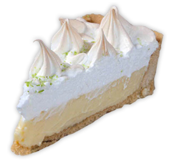

Torta de limão
Ingredientes
-
MASSA:
- 200g de farofa de bolacha
- 150g de manteiga com sal derretida, pode substituir pela manteiga sem sal e acrescentar a massa 1 pitada de sal
-
CREME DE LIMÃO
- 2 latas de leite condensado 395g cada
- 1/2 xícara de chá de de suco de limão
-
COBERTURA DE MARSHMALLOW:
- 1 e 1/2 xícara de chá de açúcar
- 3/4 de xícara de água
- 4 claras de ovos, pode ser tanto a clara in natura quanto a pasteurizada sem risco de salmonela, aqui
- 1 pitada de sal
Como Fazer
-
MASSA:
- Comece pré aquecendo o forno a 180 graus.
- Esprema o suco de 2 limões, 1/2 xícara de chá. Reservetorta de limaoColoque 200g de bolacha maisena ou maria no copo do liquidificador e bata na função ‘pulsar’ até tritura-las e até que virem uma ‘areia’, aqui.torta de limao1. MASSA: Faça a massa, veja aqui.
- Em um bowl pequeno, coloque 150g de manteiga e leve ao micro ondas, em potência alta, por 1min até derreter. Junte a manteiga, a farofa de bolacha com ajuda de uma colher misture até virar uma ‘farofa úmida e grossa’, ao pressionar ela adquiri uma consistência compacta porém se esfarela com facilidade, lembrando uma paçoca.torta de limao
- Espalhe a massa no fundo da forma e nas laterais e monte amassando e unindo as partes, primeiro com auxílio da colher e depois com os dedos.torta de limao
- Coloque 1 folha de papel manteiga, sobre a massa e sobre ela 1 k de grãos de cerâmica próprios para assar torta ou use feijão cru.
- Asse no forno, pré aquecido 180°C por 10 minutos pré assando a massa
- DICA:Dê preferência as formas de fundo removível, uma mão na roda, na hora de desmontar. Se você não tem uma, dá para improvisar forrando a forma com papel manteiga, antes de colocar a massa, deixando uma borda de papel para o lado de fora da forma de modo que você consiga puxa-lo na hora de desenformar.torta de limao
- Enquanto isso … enquanto a massa assa … faça a calda de caramelo em ponto fio.
- Em uma panela, fogo alto coloque 1 e 1/2 xícara de chá de açúcar e 3/4 de xícara de chá de água, misture, após ferver abaixe o fogo e deixe por cerca de 15 minutinhos até ponto de fio, veja como aqui.
- Esse calda será usada logo mais, no preparo da cobertura de marshmallowtorta de limao
- Enquanto isso … enquanto a massa assa e a calda fica no ponto, prepare o creme de limão.
-
CREME DE LIMÃO
- CREME DE LIMÃO: No copo do liquidificador, coloque 2 latas de leite condensado, com 1/2 de xícara de suco de limão. Bata por 1-2 minutos até que a mistura fique homogênea. Desligue o liquidificador.
- Simples assim e já pronto o melhor creme de limão da vida! Pode acreditar
- A proporção ideal, para um creme sabor suave e delicado: 1/4 de suco de limão para cada 395g de leite condensado – 1 lata.torta de limao
- A esta altura a massa já deve estar no ponto, não esqueça de retira-la do forno. Espere esfriar. Cuidado para não passar do ponto e queimar. Ela é bem sensível. São 10 minutos, estourando 15 min se o seu forno for mais lento, mas é o tempo máximo indicado.
- Enquanto a massa esfria um pouco, para acelerar coloque -a e também o copo do liquidificador com o creme na geladeira e reserve ambos.
- Com a massa já fria, distribua o creme de limão sobre ela. Leve a geladeira novamente.torta de limao
- Enquanto isso … enquanto a massa esfria na geladeira e com a calda já em ponto de fio, faça a cobertura de marshmallow.
-
COBERTURA DE MARSHMALLOW:
- Coloque as claras na batedeira + uma pitada de sal, lembrando que o bowl deve estar sempre limpo e seco e as claras em temperatura ambiente, sem nenhum pontinho de gema. Ligue a batedeira, em velocidade máxima e bata até o ponto de neve aqui.
- Acrescente aos poucos a calda de caramelo em ponto de fio e bata por mais 10 minutos, até ficar bem firme e bem brilhante.
- Ponto de fio: quando você pegar um pouco com na colher e ao despejar não está mais líquida, formando um fio.
- Quanto mais encorpada a calda, mais consistência terá o marshamllow. Mas cuidado, é bom ficar em cima, porque se descuidar pode caramelizar igual calda de pudim. Alguma dúvida? Quanto ao ponto de fio? Dá uma espiadinha no post aqui.
- Guarde as gemas, num recipiente tampado e congele, para ser reaproveitado em outras receitas. Costumo guardar e quando tenho 10 gemas, faço um quindim. 😉torta de limao
- Coloque a cobertura sobre o creme de limão. E faça desenhos circulares com a ponta do dedo.
Modo de Preparo